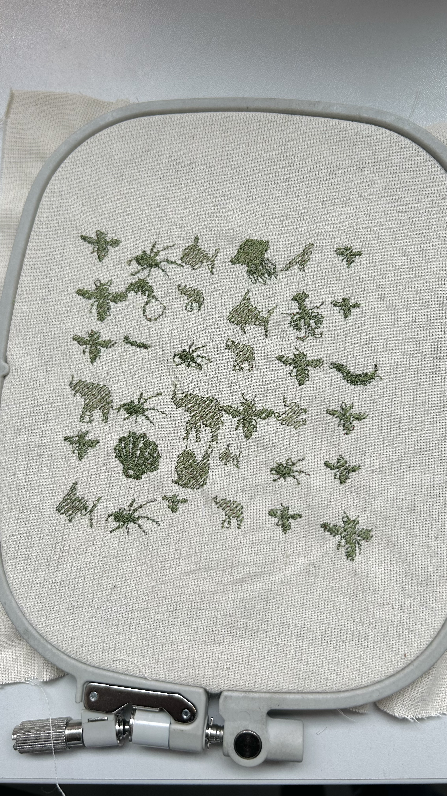

"Data-Animal Remnant" is an embroidery project driven by big data, investigating the convergence of digital life, de-extinction, and the transformative power of large-scale data analysis. Employing the processing.embroider library and PEmbroiderGraphics, the artwork showcases the potential of big data in creative expression.
The project incorporates two primary data sources: a comprehensive website featuring endangered animals worldwide and an API from Steam, a popular gaming platform. By extracting animal groups and quantifying endangered species from the first source, the project establishes connections between these groups and the gaming world represented on Steam.
Through the interplay of embroidery and big data, "Data-Animal Remnant" prompts contemplation on the evolving boundaries between animals and machines in the digital age. It challenges traditional notions of animals as solely physical beings, as digitalization extends beyond a mere recording of their physical existence (Adams, 2020).
Moreover, the project raises thought-provoking questions about the authenticity of digitized creatures. While advanced technologies enable the resurrection of extinct animals like dinosaurs in virtual worlds, "Data-Animal Remnant" questions whether these recreations truly embody the essence of the original species.
"Data-Animal Remnant" underscores the significance of big data in reshaping our understanding of animals and their relationship with the digital realm. By bridging embroidery and data-driven insights, the project invites viewers to reflect on the ethical considerations, blurred boundaries, and profound impacts of big data on our perception of the animal kingdom and the rapidly evolving landscape of technology.